A 14-month engagement redesigning a salon & spa management platform serving 3,500+ businesses.
From a $50K proof-of-concept to an $850K+ embedded product partnership.
Client
Millennium Systems Intl.
Timeline
Mar 2025 – Sep 2026
Contract
~$1.64M · 5 phases
My Role
Design Lead, IC Designer
01
The Stakes
$4 million lost. 500K a month.
Meevo was bleeding customers. Exit interviews told a consistent story: too many clicks, overwhelming navigation, interfaces that couldn't be learned fast enough. Front desk staff — often teens raised on mobile-first apps — were the primary users.
Annual Churn Loss
0
Monthly Bleed
0
Appt Book Clicks
0/mo
Help Articles
0
589K words explaining usage
Then the catalyst: an enterprise client who'd left for a competitor, found it couldn't scale, and came back with conditions — modern UX and WCAG 2.1 AA compliance. This wasn't a nice-to-have. It was existential.
The original product
Before the redesign
app.meevo.com/appointment-book
Appointment Book — calendar view: a dense grid that was hard to scan and slow to learn.
app.meevo.com/appointment-book/new
Appointment Book — booking panel: long forms and buried actions.
app.meevo.com/register
Register — point of sale: a cluttered, click-heavy checkout.
app.meevo.com/register/drawer
Register — drawer manager: dense tables and modal-heavy cash reconciliation.
02
Entering the Story
I joined a moving train. And bet on foundations.
Phase 101 was already done — a separate team built future-state prototypes to win the enterprise pitch. I entered in Phase 102 (May 2025) as Design Lead with one partner designer.
01
Ship Appointment Book Workflows
Design 5 additional scheduling workflows — the visible output the client was expecting. My partner designer took point, shipping screens at pace.
02
Build the Component System
Instead of maximizing visible output, I invested in systematizing the component library — the invisible infrastructure underneath every screen.
03
Stand Up the Register Workstream
Start digging into the Register's requirements and stand up the early stages of that workstream — the point-of-sale flows that would become the next major front of the redesign.
I made the first consequential call: foundations before features. If I didn't build it now, every screen we added would make the debt worse.
"The client wants to see screens. I need to build a system. If I don't build it now, every screen we add makes the debt worse."
My rationale for component-first, Phase 102
Early design-system artifacts
The M3 Audit
I mapped every existing Meevo style and component against Material Design 3, then proposed a path forward for each.
Meevo (101)
What was designed
Material 3
Industry standard
Proposals
My recommendations
Foundations
Color systemRebuild
Typography scaleRebuild
Surfaces & elevationAdopt M3
Buttons (standard)Adapt
Icon buttonsAdopt M3
FABAdopt M3
Toggle & segmentedAdapt
Text inputsAdapt
Components
Global navRebuild
Side navigationAdapt
FiltersNew
Date pickerAdapt
CardsAdopt M3
AvatarAdapt
BadgeAdopt M3
Page headerRebuild
List panelAdapt
ModalsAdapt
BannersAdopt M3
0
Items audited
0
Adopt M3
0
Adapt
0
Rebuild
0
New
Color palette
Built for light & dark.
Light/Dark
Primary brand blues
300BAD6FF
40060B3FF
5001F58CA
7001F4797
900002E79
Neutral UI grays
whiteFFFFFF
300B4B4B4
400747474
5004F4F4F
700323232
black000000
System states
success2E7D5B
warningC77D2E
errorC0392B
info2F6FB0
Statuses appointment
checked-in3D8BF2
confirmed3FA876
unconfirmedE0A93B
running-late8B6DD1
Category 12 service families
berry
coral
tangerine
gold
forest
teal
ocean
indigo
violet
magenta
slate
graphite
Color tokens
One name, two modes.
single source of truth
TokenLightDark
primary-300BAD6FF002E79
primary-5001F58CA4C8DFF
primary-900002E7989C0FF
gray-700323232E7E7E8
gray-300B4B4B46A6A6C
ui-whiteFFFFFF0F0F10
bg-overlay000 · 40%000 · 80%
bg-gray-100F3F5F72C2D30
success-4002E7D5B5FC79A
status-confirmed3FA8765FC79A
Collections
85Colors
30Type tokens
22Spacing
9Size
6Radius
2Borders
primaryneutralsystemstatuscategory
Type stack
One scale, head to caption.
Source Sans Pro · 24 roles
Display Bold
h156/60
h248/52
h340/44
Headline Bold
h436/40
h532/36
h628/32
Title Bold
title-lg24/32
title-md18/24
title-sm16/22
Label Semi
label-lg18/24
label-md16/20
label-sm14/16
Body Regular
body-lg18/24
body-md16/22
body-sm14/20
Hyperlink Regular
link-lg18/24
link-md16/22
link-sm14/20
Button Bold
button-lg16/16
button-md14/14
button-sm14/14
Caption Regular
caption-md12/16
caption-sm10/14
Buttons
Every variant, every state.
Default
Hover
Active
Focus
Disabled
Primary
Button
Button
Button
Button
Button
Secondary
Button
Button
Button
Button
Button
Text
Button
Button
Button
Button
Button
Icon
SizesSmallMediumLarge
03
The Ramp
From 2 designers to a product team.
The board approved the full redesign. Phase 103 expanded us from 2 to a proper product team — 4 designers, a PM, and a tech lead. Budget jumped from $52K to $484K.
Phase 101
Proof of Concept
$49,920 · 2 designers
Phase 102
I Join
$52,300 · 2 designers
Phase 103
Full Product Team
$484,160 · 6 people
Phase 104
Team Expansion
~$200K · 9 people
Phase 105
Current Phase
$851,050 · 6 people
We brought in two new designers — one to support the Appointment Book team, another to stand up the Online Bookings workstream. A fourth designer joined shortly after on AB as well. I split my time between IC design work on the Appointment Book, establishing the design system, and leading the growing team.
The Appointment Book gap analysis — 50+ gaps across 8 scenario categories — came to us pre-built by the client. It was an early tell of how the engagement would run: we'd be handed conclusions, not brought into the discovery behind them. I turned what they gave us into a prioritized roadmap that drove 7 months of design work.
04
Building the Process
Design the process. Then use it.
Scaling from 2 to 6 designers meant I needed a real design process — not just guidelines, but an end-to-end pipeline. I built it, documented it in Figma, then used it myself as an IC so I could refine it from experience before handing it to the team.
The benefit of being an IC on this project: I could eat my own cooking. Every friction point I hit as a designer fed back into process improvements. By the time new designers joined, the pipeline was battle-tested — not theoretical.
The pipeline runs across two file domains — a WIP file for exploration and a Delivery file as the dev-ready source of truth — with a review gate between them and a componentization loop that feeds patterns back into the libraries.
Stage 01 · WIP Domain
WIP File
The design sandbox. Work however you like, but keep it organized and labeled so internal reviews stay fast.
Components section — shared, in-progress components, componentized as you go.
Sprints section — organized by sprint number, then feature name.
Componentizing early means faster iteration, consistent updates, and less rework at delivery.
Can't componentize something yet? Flag it in the weekly internal working session.
Stage 02 · Review Gate
Review
Three review stages carry work from exploration to dev-ready — each with a clear owner and exit criteria.
1 · Exploration & Design
Designer and PO collaborate — async feedback, mid-sprint check-ins, and end-of-sprint reviews.
2 · Stakeholder Review
Present to leadership and confirm alignment with business goals. Approval unlocks delivery prep.
3 · Delivery Prep
Docs complete, fully componentized, annotations ready — a final sign-off before dev-ready.
Stage 03 · Delivery Domain
Delivery File
The single source of truth for engineering — only approved, dev-ready work lives here. Four sections keep it dependable:
Change Log
Every addition, update, or change to dev-ready work — engineering's audit trail.
Dev Ready
Finalized designs with annotations, flows, and a master prototype, organized by sprint.
Staging Area
Holding space for approved designs awaiting conversion; stakeholder sign-off happens here.
Screens
Componentized source of truth for every screen and modal — updates cascade via nesting & variants.
Stage 04 · Delivery Domain
Final Handoff
A repeatable checklist takes finished design from WIP to a clean, dev-ready delivery.
Componentize elements & screens
Migrate WIP → Delivery staging
Map flows & annotate behaviors
Build prototypes
Internal design approval
Notify stakeholders
Stakeholder approval → Dev Ready
Migrate patterns to libraries
Update change log & version
Mark ticket complete, clean up WIP
Stage 05 · Delivery Domain
Post-handoff
Reusable work componentizes upward so the libraries stay healthy and every future screen inherits it.
Global Elements
Anything already global is pulled from the Global UI Library; new or modified globals migrate back up.
Bespoke Patterns
Workstream-unique patterns migrate to the right domain library — staff- or client-facing.
Screens
Componentized so updates cascade everywhere; the file stays a single source of truth.
Loop elements, patterns, and screens as components and updates become fields, not manual overrides — so the library stays dependable for the long term.
05
Appointment Book
178 features. 23 of them mine.
The Appointment Book is Meevo's highest-traffic area — the screen front desk staff spend their entire day in. 5.3M clicks/month. Our redesign produced 178 features across 12 sprints. I designed 23 while managing the team, mentoring designers, and building the design system.
My IC work concentrated on the hardest flows — where booking logic, scheduling conflicts, and checkout collide. I classified every feature by type, shaping how we scoped and staffed:
Reskin
Visual Modernization
Match the new design system, preserve behavior.
Additive
Feature Enhancements
New capabilities on existing flows. More edge cases.
New Design
Net-New Workflows
Full rearchitecture. Highest-impact work.
Features I designed
Sprint 4
Multi-service & add-on bookings
Complex booking flow handling multiple services per appointment. One of the heavier design lifts.
Sprint 4
Client appointment checkout
End-to-end checkout from the appointment book. Tying scheduling to payment.
Sprint 6 → 11
Appointment rebooking
Reschedule flow iterated over 3 sprints with copy/rebook for block times.
Sprint 7
Double booking & conflict alerts
Conflict detection and resolution. Disproportionate support volume driver.
Sprint 7
Running late for appointment
Late arrival states and notifications for front desk awareness.
Sprint 5
Confirmation status management
Appointment confirmation state workflows and tracking.
Sprint 12
Service booking pre-requisites
What must be true before a service can be booked. Deceptively complex rule engine.
Sprint 11 → Phase 105
Navigation system
Quick nav, tab nav, global nav, plus 5 and 10 minute interval support.
Phase 105
Mobile landscape
Responsive calendar at the mobile landscape breakpoint.
Shipped screens
app.meevo.com/appointment-book
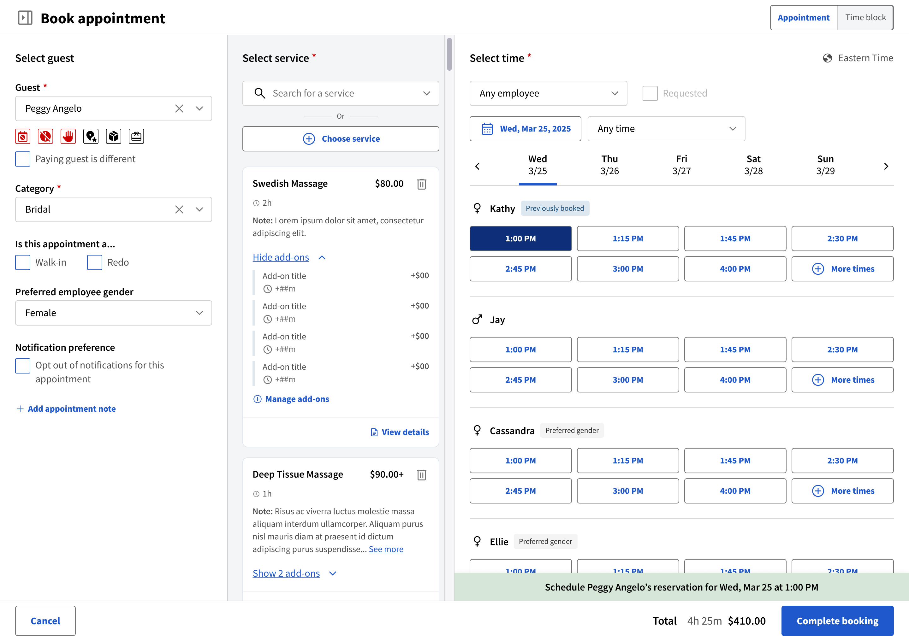
Multi-service booking — one guest, multiple services & add-ons, with live employee availability.
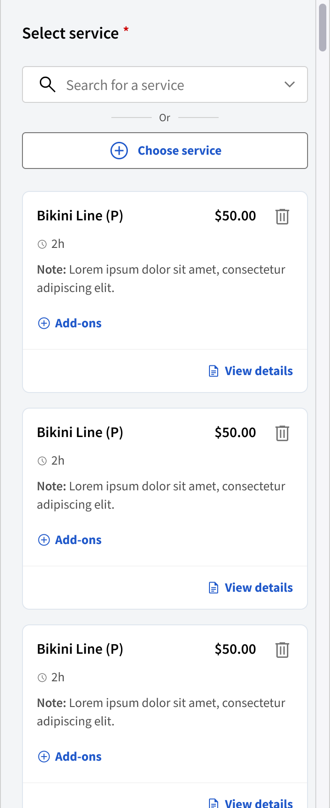
Service selection on mobile — the same booking flow, rebuilt touch-first for front-desk staff.
app.meevo.com/appointment-book
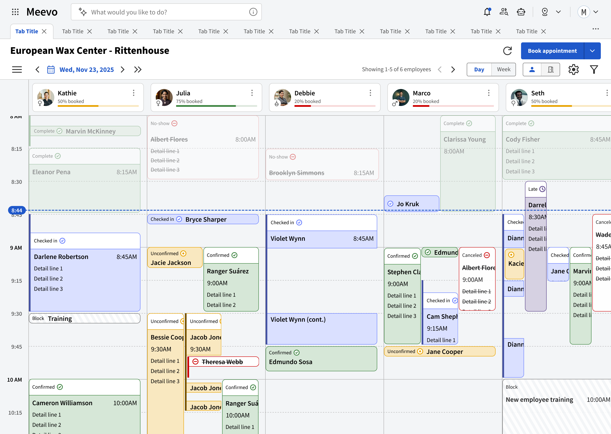
Global navigation & calendar — the redesigned Appointment Book, multi-employee day view.
Desktop
MenuLogoConvo barActionsLocationUser
Meevo
What would you like to do?
Tab Title Tab Title Tab Title Tab Title Tab Title Tab Title
Overflow tabs collapse into
Mobile
MenuConvo barOverflow
What would you like to do?
Navigation anatomy — one bar across desktop & mobile: menu, a conversational command bar, quick actions, location, user, and tabs that collapse into an overflow.
app.meevo.com/appointment-book
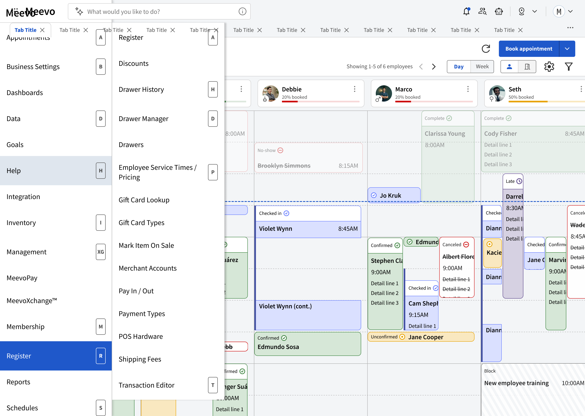
The menu, open — global areas with keyboard shortcuts and a flyout submenu (Register).
app.meevo.com/appointment
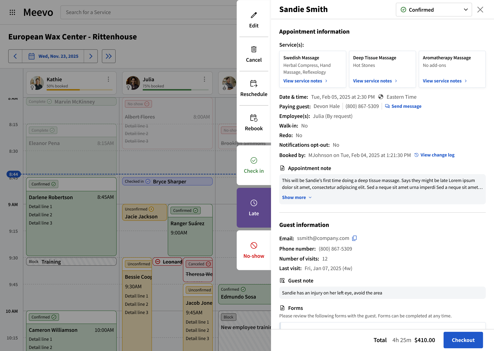
Appointment detail — status, services, fees and quick actions in one panel.
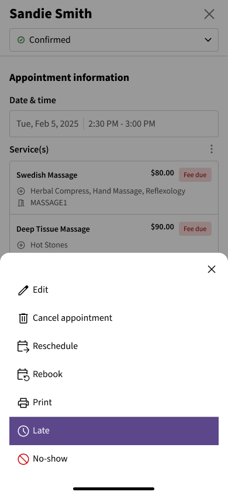
Marking an appointment “running late” — status actions surfaced in a mobile sheet.
Multi-guest booking — a huge undertaking that forced us to reassess the entire book-appointment design. I collaborated closely with the designer on this to establish how to fit this complexity into the existing interface. 93% single vs. 7% multi-guest, but that 7% drove disproportionate support burden.
Designed for every screen
The Appointment Book calendar — the platform's highest-traffic view — had to work everywhere a salon front desk lives: a wide monitor, a tablet propped on the counter, a phone in a stylist's pocket. Same calendar, four breakpoints.
Responsive · 5 breakpoints
app.meevo.com/appointment-book
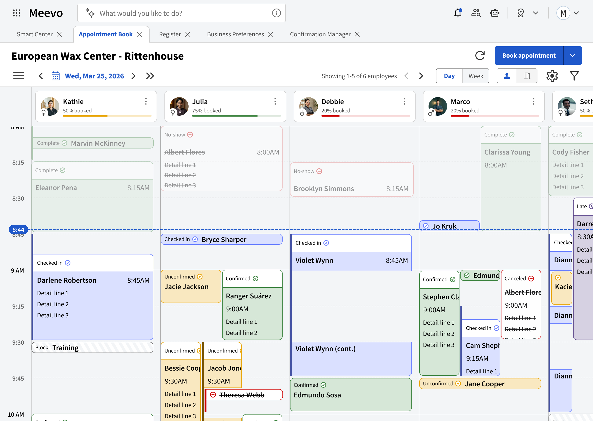
Desktop · 1440px+
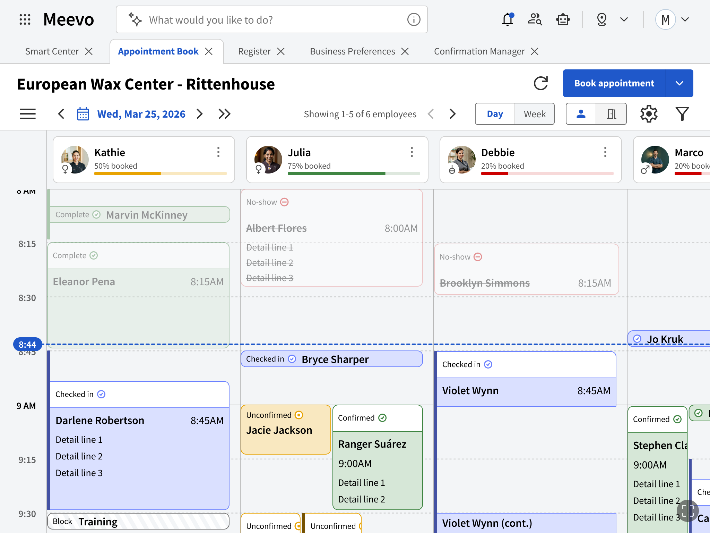
Tablet · Landscape
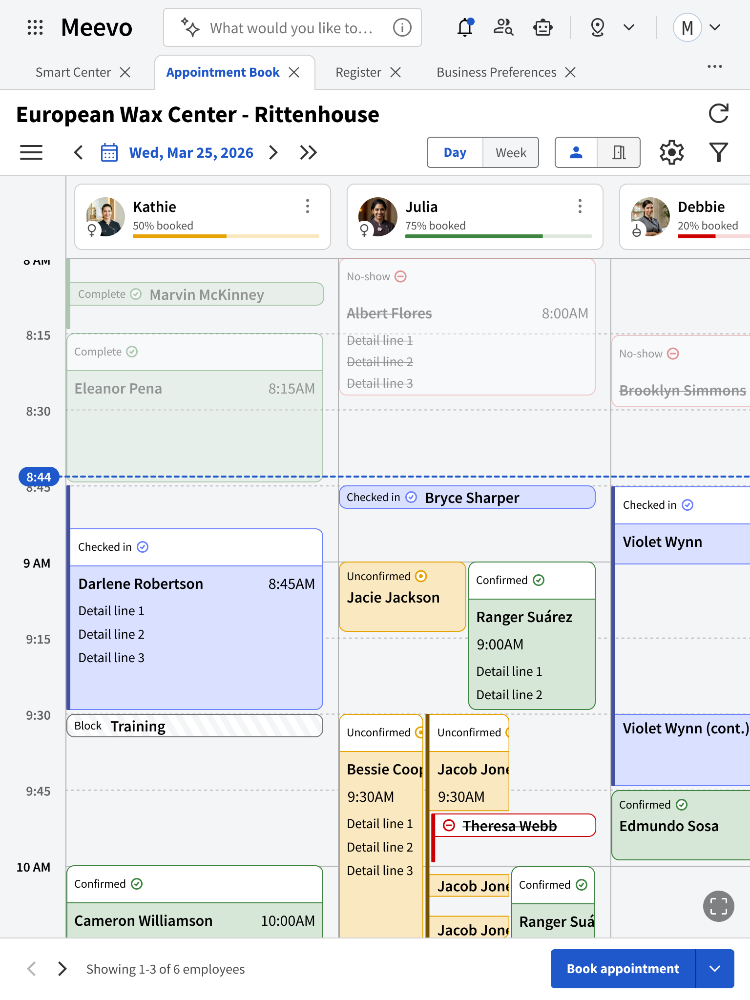
Tablet · Portrait
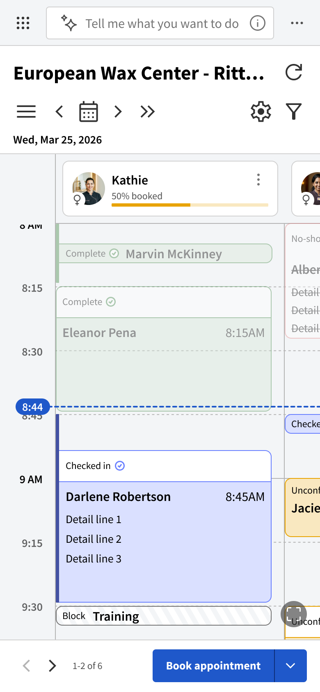
Mobile
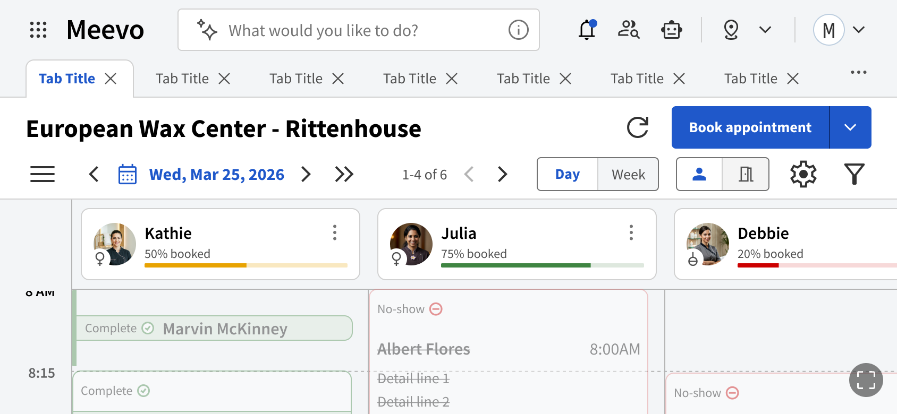
Default · full nav & controls
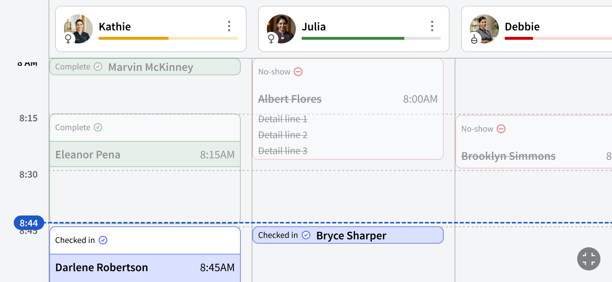
Full screen · calendar maximized
Mobile · Landscape
06
Leading the Team
Four workstreams. One team.
As the engagement grew, my role expanded from owning a product area into leading design direction across four parallel workstreams — keeping them aligned as one product while helping each designer lead their own.
Design direction
across all four workstreams
Over the engagement my focus shifted from IC work on the Appointment Book toward design leadership and system strategy.
Staff-facing — runs the business
Appointment BookRegister
Client-facing — used by customers A senior designer led day-to-day
Online BookingsOnline Purchasing
Kept it aligned
As priorities moved — Register, then an all-hands Appointment Book push — I rebalanced the team without losing momentum or letting a workstream drift into its own product.
Built a critique culture
Designers lived in each other’s files — feedback, gut-checks, working sessions — before work ever reached me. Critique became how the work moved, not a checkpoint.
Mentored designers to lead
Enough structure and alignment for designers at every level to own their area — including a senior designer who grew into leading the client-facing work.
That trust and shared rhythm became one of the strongest parts of the engagement — it’s what let four workstreams move fast and still feel like one product, and surfaced the patterns that became our design system.
07
The Design System
A system of pivots.
The design system story is really a story about organizational learning. Critical context: the product team was brand new. The Director of Product started the same day I did in Phase 102. Everyone on the product side was new, and all legacy knowledge had walked out the door. There was also fear in the room: the company had just watched a near-fatal amount of revenue leave with departing customers, and a frightened team trusts no one but itself — so it held information tight and kept tight control. The constant pivots were a symptom of that. We learned the organization together, one pivot at a time — which is exactly why the trust we did build mattered so much.
Phase 102
M3 base, new React codebase
Material UI as the foundation. Plan was a greenfield React build. I started componentizing on this base.
Phases 103–104
The "reskin" pivot
Leadership felt the new codebase was too slow. Pivoted to reskinning existing Angular. I pushed back — the codebase had zero reusable components.
Phase 105
The turning point
Engineering started vibe-coding their own component system. The DS went from design artifact to shared design-engineering resource.
Why build a system at all?
The gap between design and engineering
When I joined, there was no design system. Every workstream was building components from scratch. Engineering had no shared library, no tokens, no consistent patterns. The result:
Duplication everywhereThe same button built 5 different ways across 5 Figma files
Design-dev driftNo shared source of truth — designs diverged from implementation immediately
Slow onboardingNew designers had to reverse-engineer patterns from existing files
"When will the DS be done?"Leadership asked constantly — we had no shared language to answer
The 2-tier model
Where we started — a flat hierarchy
The initial architecture was simple: one Global UI Library feeding directly into workstream files. Fast to set up, but it created a critical gap.
The gap: Composed patterns (a booking flow, a data table with filters) had no natural home between global primitives and workstream screens. Result: duplication, inconsistency, no single source of truth for domain-specific components.
The 3-tier model
Introducing the domain layer
I proposed adding a domain layer between Global and File levels. This gave composed patterns a proper home — documented by intent and behavior, reused across workstreams.
1
Clear ownershipEach layer has a defined scope and owner
2
No more orphan patternsDomain layer catches everything between primitives and screens
3
Cross-workstream reuseStaff patterns serve AB + Register without duplication
The readiness model
Replacing "when will it be done?" with a maturity framework
Stakeholders kept asking "when will the design system be done?" — an impossible question. I replaced it with a maturity model that gave everyone a shared language for measuring progress.
M1 · Usable
Design usable
Stable enough for designers to use consistently and extend without rework.
Dev usable
Stable enough for developers to implement from with limited clarification.
Product usable
Stable enough for product to reference for planning, review, and prioritization.
M2
Consolidated
Canonical source of truth established; duplicate and conflicting patterns resolved.
M3
Documented
Usage, behavior, and rules centralized in the correct library.
M4
Operationalized
Release cadence, changelog, and design-to-dev update process established.
M5
Governed
Ongoing changes prioritized, reviewed, and maintained through a defined process.
ImmatureMature · Self-sustaining
This model reframed the conversation from a binary "done / not done" into a spectrum of maturity. Each milestone has concrete exit criteria, making progress visible and measurable for non-design stakeholders.
Milestones by library
Tracking maturity across all three tiers
Each library progresses independently through the milestones. This matrix became the artifact I presented to leadership to communicate DS health.
Library / Milestone
M1
Design & dev usable
M2
Consolidated
M3
Documented
M4
Operationalized
M5
Governed
Global UI
Shared foundations & core componentsFoundation
Done
Core tokens & components in use
Done
Variants deduped — one source of truth
Done
Usage, behavior & rules documented
In progress
Release cadence & changelog forming
Not started
Governance TBD
Staff Library
Appointment Book + RegisterTop priority
Done
AB + Register patterns migrated
Done
Duplicates resolved across files
Done
Documented by intent & behavior
In progress
Operationalizing with the team
Not started
Awaits operating model
Client Library
Online Bookings + PurchasingCan deprioritize
Done
Created & audited
Done
Consolidated where it pays off
In progress
Documenting booking & purchasing
Not started
Deferred behind staff work
Not started
Deferred
DoneNearly there (~50%)In progressNot startedMaturity frontier falls off toward M4–M5
Where we are now
The system as a living product
The design system went from a design artifact no one referenced to a shared design-engineering resource. Engineering started vibe-coding their own component system that references ours.
0
Architecture depth
Global → Domain → File. Clear ownership at every level.
0
In the system
3 system libraries + 4 workstream deliverable files
0
Published components
In use across all seven libraries
0
Maturity framework
From "usable" to "governed" — shared language for progress
0
Consuming the system
AB, Register, OB, OP, and Client Portal (planned)
The real win
The milestones and readiness model did more than track progress — they changed how leadership talked about the design system. Instead of "when will it be done?", the question became "what milestone are we targeting this quarter?" That shift from binary to incremental was the turning point.
Documentation as a deliverable.
A system is only as strong as its documentation. I wrote comprehensive standards for every component and deliverable — anatomy, behavior, accessibility, and clear do's and don'ts — so any designer or engineer could consume the system without needing a meeting.
Documentation standards
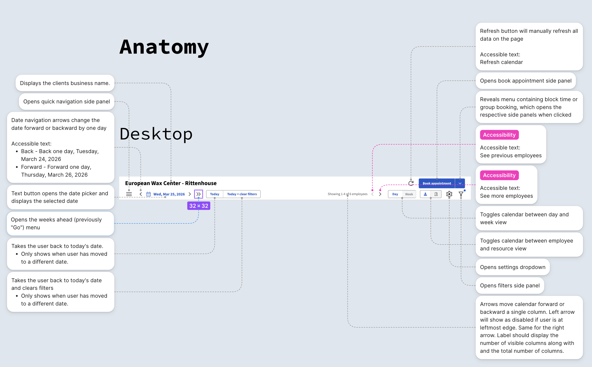
Component anatomy — every control in the Appointment Book toolbar documented with its behavior and accessible text.
Color system — primary, neutral, system, status & category tokens with do/don't guidance. ↕ Scroll within to explore the full spec.
Toast component — anatomy, wrapping rules, single / multiple / mobile behavior, and usage. ↕ Scroll within to explore the full spec.
08
Bridging the Gap
The meeting that changed everything.
The client had walls up everywhere, and the starkest was this: we were explicitly told not to communicate with developers. Design handed off; engineering interpreted; component discrepancies accumulated silently. We flagged the risk more than once — they held the line, and it kept us reactive when we needed to be proactive.
I started back-channeling — having quiet conversations with individual engineers to prove there was a need for collaboration. Once the Director of Product was convinced, we started with a 30-minute weekly sync. It's now a one-hour meeting that has fundamentally moved the design system forward.
Before
Engineering pulled from Figma libraries up to 8 weeks out of date
No process for updating components based on design changes
80%+ of implementation questions went unanswered
Silent drift between Figma and Prism (Angular library)
After
Weekly design-dev sync with FigJam collaboration board
Component update tasks linked to Prism baselines
Defined process: change design to match code, or vice versa
80%+ reduction in implementation questions
Quality you feed the design system now = quality AI produces in 3–6 months.
09
AI as a Design Tool
I didn't adopt AI. I built a practice.
Bringing AI into the work meant clearing two barriers — first understanding what these tools can do, then how that maps to real design work. I crossed both myself, took my team across, and ended up building the context platform that made Claude genuinely fluent in Meevo.
The Adoption Curve
AI isn't one leap. It's two barriers — crossed twice.
Adoption wasn't a single decision. It was two sequential thresholds: first understanding what these tools can do, then learning how that maps to the work. I crossed both myself — then walked the team across the same two.
Pass 01Me. I crossed both barriers first — learning the tools, then bending them to the work.
Pass 02The team. Then I walked the same path with the designers I lead — guided, not guessing.
Crossing them — first me, then the team
Each stage gave up more leverage than the last: a personal assistant became an agentic partner — and an agentic partner became the way an entire team worked.
ChatGPTAssistant
Augmenting the everyday
First half of the engagement: ChatGPT for communications, documentation, and research — annotation patterns, interaction behavior, UX best practice — with its context continuously sharpened through Projects.
Claude CodeAgentic
Seeing the real ceiling
Agentic tools changed the game. A hand-built markdown context framework let Claude elaborate half-formed design tickets, document the most complex components, and stand up fully interactive HTML prototypes I could put in front of real users to validate.
The teamScaled
From my practice to ours
I packaged the Claude Code workflow into a repeatable process and walked the team through both barriers — until AI was woven into how the whole team worked, not a tool a few people dabbled with.
The framework that powered all of this had a ceiling of its own — and lifting it produced the biggest efficiency jump of the project.
The MCP evolution · context engineering
From a folder of files to a queryable brain.
BeforeV1 · Markdown context framework
A GitHub-backed vault of .md files — SOWs, budgets, meeting notes, every feature. To answer one question, Claude had to read the whole pile.
Every query reads every file — heavy, slow, weak search
codify
via MCP
AfterV2 · Codified database via MCP
The corpus codified into related SQL tables plus a graph layer, served through a custom MCP server. Exhaustive reading becomes one targeted query.
One precise query hits exactly what it needs
Tokens per query
V1
V2
0fewer tokens
Answer accuracy
0more accurate
The corpus, codified
0
documents
0
meetings
0
decisions
0
graph nodes
3,818 edges · 16 MCP tools · SQLite
10
Leading Through Growth
From doing the work to enabling the work.
The team grew from 2 to 7 across 5 phases. Each person multiplied capability and coordination surface. My role evolved from designer who leads to leader who designs.
Documentation
Onboarding in a sprint
Team Setup Guide, CLAUDE.md context files, DS consumption guide. New designers productive within their first sprint.
Mon sync, Tue working session, Wed client leads — plus per-workstream planning, refinement, and review.
Earning trust
Trust wasn't the starting condition — it was something I had to win, phase by phase, from a client whose instinct was to control everything. Every SOW renewal was a checkpoint. By Phase 105, that trust ran deep enough that when the client needed to replace a problematic product owner, they involved me in the recruiting process — one-on-one interviews with candidates, helping make the final hiring decision. That's not a typical vendor relationship.
The $50K → $850K trajectory wasn't an accident. It was 5 renewals, each larger than the last, with increasing design autonomy at every step.
11
The Numbers
What it added up to.
Contract Value
0
Features Designed
0
324 shipped across 4 workstreams
My IC Features
0
19 complete across 12 sprints
Meetings
0
362 decisions · 676 action items
KB Articles
0
589K words analyzed
Project Docs
0
342K words produced
Design Tokens
0
Variable bindings
Dev Q Reduction
0
After design-dev sync
Trust
5 consecutive renewals
$50K → $52K → $484K → $200K → $851K. From vendor to embedded product team.
Self-Sufficiency
DS as shared resource
Engineering vibe-coding Prism with Claude Code. Foundation for internalizing design capability.
Consistency
Cross-workstream patterns
Shared libraries, composed patterns, "componentize as you go" — all transferred without rework.
The money, and the delivery.
Contract value · 5 phases
A 17× ramp.
A $50K proof-of-concept grew into an $850K embedded partnership.
Total contract value~$1.64M across 5 phases
Delivery · 4 workstreams
Shipped vs. scoped.
324 of 529 scoped features shipped — with Register still mostly ahead.
Total shipped324 / 529 features · 61%
12
What I Learned
Six things this project taught me.
Systems, not screens
You don't ship 360+ features through heroic individual effort. They ship through a shared design system, clear processes, and well-scoped sprints that keep a whole team moving in sync.
AI is a tool, not a replacement
AI sped the work up without replacing the craft — Claude drafted, but the designer owned every decision, and a custom MCP made 14 months of project history instantly searchable.
Trust is compounding
Growing the contract from ~$50K to ~$850K wasn't luck — it was five renewals, each larger than the last, each handing us more autonomy as trust built.
Doing great work inside constraints you can't change
I never got to own discovery, prioritization, or requirements — the client kept those. The skill I built was delivering the best design possible with partial information, while keeping an anxious client confident enough to keep going. Success came despite the blockers, not because they went away.
Not every feature deserves equal investment
Clock-in indicators — unused by ~83% of locations — got clean, functional design instead of a flagship build, saving weeks. The 93/7 single-vs-multi-guest split showed where added complexity was actually worth it.
Knowledge management is a design competency
Across 14 months with 6+ designers, remembering why we decided something mattered as much as the decision itself — so capturing and retrieving that context became part of the design work.
What I'd do differently
Start the design system earlier
Building the design system was the right call — I just should have pushed for it harder and sooner, back in Phase 102, instead of letting it ramp up gradually.
Formalize design-dev sync sooner
A standing design-engineering sync should have been in place from Phase 103 — the inconsistencies it eventually surfaced had been quietly piling up between the two teams for months.
Push for user testing earlier
Our interactive prototypes made real user testing possible — we leaned on stakeholder judgment longer than we should have, when we could have been validating with actual users.